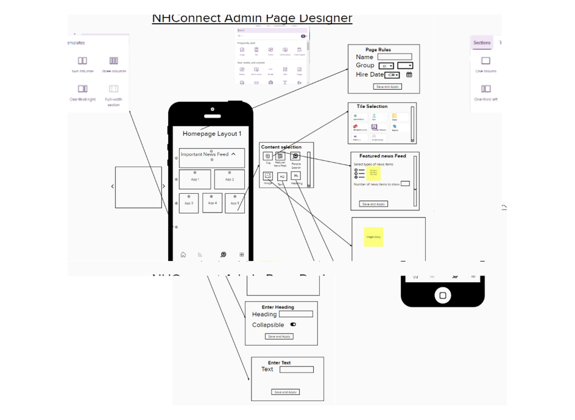
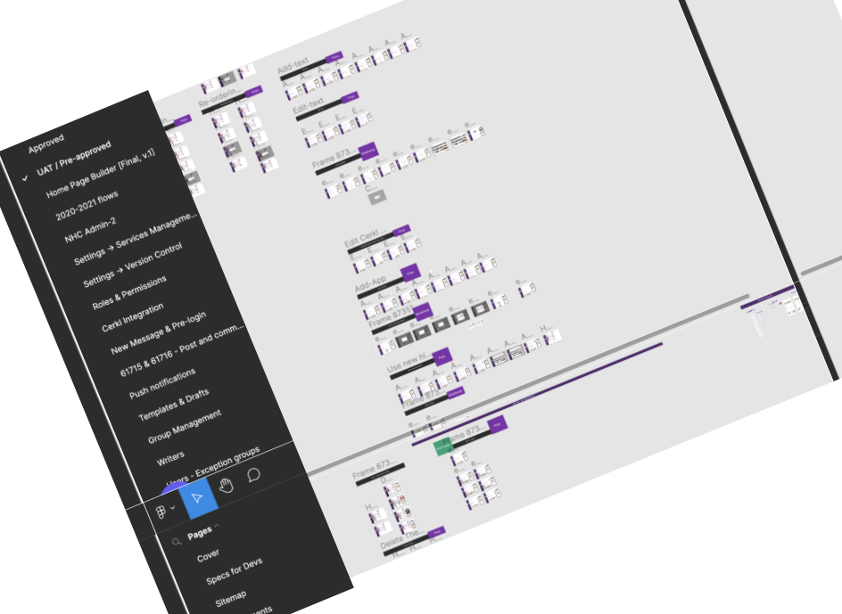

Novant Health
- TOOLS: FIGMA, FIGJAM, ZOOM, MIRO, MURAL
- SKILLS: PRODUCT DESIGNER, UI DESIGNER, UX RESEARCHER, UX DESIGNER
About NH Connect (Novant-Health)


Design Process
STEP 1
Essential Requirements for Seamless Administration
Through a meticulous requirements gathering process with the product management team, we garnered valuable insights for enhancing the admin app and dashboard. Building upon these insights, we refined the dashboard to encompass a multitude of features accessible within a single page. Notably, our design seamlessly transitions into a mobile-friendly format, allowing users to preview the layout in real-time.
STEP 2
Iterative Screen Designing
Throughout our design process, we embarked on a journey of continuous improvement, crafting multiple iterations of our user interface.This iterative improvement process ensures that the dashboard is not only feature-rich and user-friendly but also adaptable to various devices, providing a holistic and efficient user experience.
STEP 3

Crafting Comprehensive Design Components
In the design process, I meticulously crafted reusable components with auto layout functionality to ensure versatility across both the overall admin desktop dashboard and the mobile app. These components, thoughtfully created in Figma, offer a systematic approach to design consistency. Leveraging auto layout not only streamlines the arrangement and responsiveness of elements within these components but also enhances their adaptability to different screen sizes and resolutions. This approach not only accelerates the design process but also facilitates seamless updates and modifications, ensuring a unified and cohesive visual identity throughout the entire user interface ecosystem.
NH Connect Sitemap
Iterations Web & Mobile


Result
Simultaneously, we undertook the strategic revamping of the Novant website, employing a comprehensive approach grounded in competitor analysis and the creation of detailed user personas. This method allowed us to pinpoint and address user pain points effectively. The end result is a revitalized Novant website that not only aligns with industry standards but also prioritizes user satisfaction and engagement. These achievements underscore our commitment to delivering innovative solutions and enhancing digital experiences for both NH Connect and Novant.